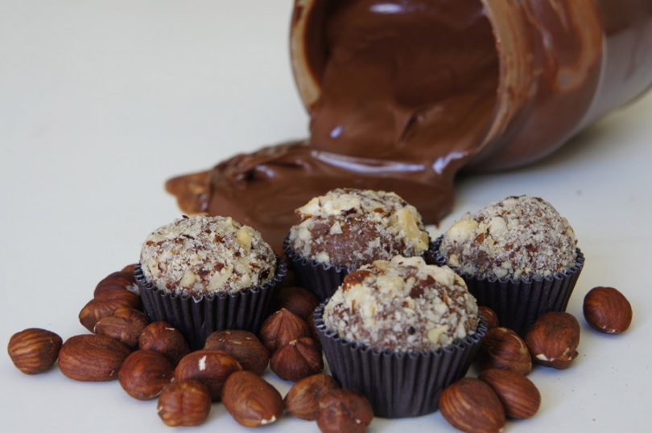

Brigadeiros de Nutella
algures da internet

Descrição
Uma receita bastante enjoativa de brigadeiros de Nutella.
Só para os grandes amantes deste creme de chocolate e avelã feito pelos deuses.
Ingrdientes
- 1 lata de leite condensado
- 50ml (1/4 de xícara de chá) de leite
- 1 colher de sopa de manteiga
- 1 colher de sopa de chocolate em pó
- 100gr (meio copo) de Nutella
- 1 xícara (de chá) de avelãs muídas
Preparação
- Primeiro aquece-se a panela, mistura-se o leite condensado, leite, chocolate, Nutella e a manteiga.
- Depois leva-se a lume brando, mexendo sempre até desprender do fundo. Este passo pode demorar algum tempo
- Retira-se do fogo e mistura-se 1 colher de sopa de avelã triturada.
- Transfere-se a mistura para um prato fundo untado com manteiga. Espalha-se bem e deixa-se arrefecer.
- Faz-se pequenas bolinhas com as mãos untadas, pasando-as, depois, pela avelã triturada até confeitar.
Não te esqueças de que são bons, mas gasta-se muita Nutella e a Nutella está cara.Bom proveito!
Voltar à página principal